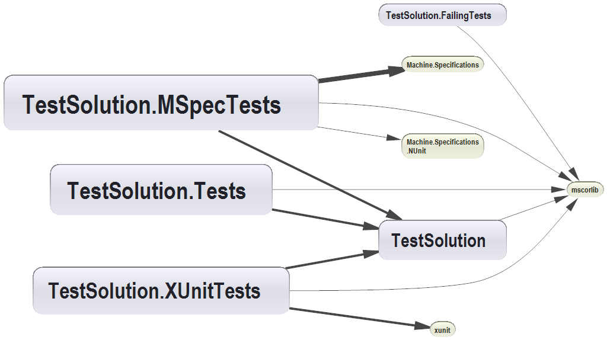

NDepend Report
Application name: TestProject
This report has been built on: 01/20/2010 23:23:46
in 00:03
by NDepend v2.12.1.3123 (Pro Edition)
Application Metrics
Assemblies Metrics
Visual NDepend View
Assemblies Abstractness vs. Instability
Assemblies Dependencies
Assemblies Dependencies Diagram
Assemblies build order
NDepend information and warnings
CQL Queries and Constraints
Types Metrics
Application Metrics
Number of IL instructions: 101
Number of lines of code: 15
Number of lines of comment: 85
Percentage comment: 85
Number of assemblies: 5
Number of classes: 6
Number of types: 6
Number of abstract classes: 0
Number of interfaces: 0
Number of value types: 0
Number of exception classes: 0
Number of attribute classes: 0
Number of delegate classes: 0
Number of enumerations classes: 0
Number of generic type definitions: 0
Number of generic method definitions: 0
Percentage of public types: 100%
Percentage of public methods: 78.57%
Percentage of classes with at least one public field: 0%
| Stat | # Occurrences | Avg | StdDev | Max |
|
Properties on Interfaces
| 0 Interfaces
| 0 | 0 | -1 properties on |
|
Methods on Interfaces
| 0 Interfaces
| 0 | 0 | -1 methods on |
|
Arguments on Methods on Interfaces
| 0 Methods
| 0 | 0 | -1 arguments on |
|
Public Properties on Classes
| 6 Classes
| 0 | 0 | 0 public properties on TestSolution.Tests.SomeTestFixture |
|
Public Methods on Classes
| 6 Classes
| 1.83 | 0.37 | 2 public methods on TestSolution.Tests.SomeTestFixture |
|
Arguments on Public Methods on Classes
| 11 Methods
| 0 | 0 | 0 arguments on TestSolution.Tests.SomeTestFixture.foo() |
|
IL Instructions in non-abstract Methods
| 14 Methods
| 7.21 | 7.87 | 34 IL instructions in TestSolution.MSpecTests.SomeSpecTest..ctor() |
|
|
|
Cyclomatic complexity on non abstract Methods
| 14 Methods
| 1.21 | 0.77 |
CC = 4 for TestSolution.MSpecTests.SomeSpecTest..ctor() |
Assemblies Metrics
Visual NDepend View

Assemblies Abstractness vs. Instability

Assemblies Dependencies
Assemblies Dependencies Diagram
Blue : Assemblies of your application.
Yellow : Tiers assemblies referenced by assemblies of your application.

Assemblies build order
TestSolution
TestSolution.Tests
TestSolution.FailingTests
TestSolution.XUnitTests
TestSolution.MSpecTests
NDepend information and warnings
01/20/2010 23:23:42 Begin analysis with NDepend v2.12.1.3123
01/20/2010 23:23:42 Retrieve dependencies of your application.
Don't load a previous analysis to compare with.
Assemblies loaded from {C:\Windows\Microsoft.NET\Framework\v2.0.50727}
mscorlib.dll v2.0.0.0
Assemblies loaded from {d:\Dev\Derick-Github\albacore\spec\support\TestSolution\TestSolution\bin\Debug}
TestSolution.dll v1.0.0.0
Assemblies loaded from {d:\Dev\Derick-Github\albacore\spec\support\TestSolution\TestSolution.Tests\bin\Debug}
TestSolution.Tests.dll v1.0.0.0
Assemblies loaded from {d:\Dev\Derick-Github\albacore\spec\support\TestSolution\TestSolution.FailingTests\bin\Debug}
TestSolution.FailingTests.dll v1.0.0.0
Assemblies loaded from {d:\Dev\Derick-Github\albacore\spec\support\TestSolution\TestSolution.MSpecTests\bin\Debug}
TestSolution.MSpecTests.dll v1.0.0.0
Machine.Specifications.dll v0.2.0.0
Machine.Specifications.NUnit.dll v1.0.0.0
Assemblies loaded from {d:\Dev\Derick-Github\albacore\spec\support\TestSolution\TestSolution.XUnitTests\bin\Debug}
TestSolution.XUnitTests.dll v1.0.0.0
xunit.dll v1.5.0.1479
11 source files parsed ; all source files found ; all source files in-sync with PDB
0 CQL constraint has been extracted from code.
No dependency cycle detected in assemblies referencement graph.
01/20/2010 23:23:44 Analyse dependencies of your application.
01/20/2010 23:23:44 Building the report (standard).
WARNING: ****** License file not found! ****** The analysis is performed but the CQL constraints won't be executed.
WARNING: Cant' load the assembly {nunit.framework}:
Several .NET assemblies have the name {nunit.framework} but they are different.
d:\Dev\Derick-Github\albacore\spec\support\TestSolution\TestSolution.Tests\bin\Debug\nunit.framework.dll v0.0 131072 bytes
d:\Dev\Derick-Github\albacore\spec\support\TestSolution\TestSolution.FailingTests\bin\Debug\nunit.framework.dll v0.0 131072 bytes
d:\Dev\Derick-Github\albacore\spec\support\TestSolution\TestSolution.MSpecTests\bin\Debug\nunit.framework.dll v0.0 77824 bytes
WARNING: No application or tier assembly found in directory {C:\Program Files\Reference Assemblies\Microsoft\Framework\v3.0}
WARNING: No application or tier assembly found in directory {C:\Program Files\Reference Assemblies\Microsoft\Framework\v3.5}
WARNING: Assembly {nunit.framework} is referenced by {TestSolution.Tests} but is not found.
WARNING: Assembly {nunit.framework} is referenced by {TestSolution.FailingTests} but is not found.
CQL Queries and Constraints
{Code Quality} All CQL queries compile and all CQL contraints are satisfied.
{Code Quality \ Type Metrics} All CQL queries compile and all CQL contraints are satisfied.
{Design} Some CQL constraints are not satisfied.
{Design \ Performance} All CQL queries compile and all CQL contraints are satisfied.
{Unused Code / Dead Code} All CQL queries compile and all CQL contraints are satisfied.
{Encapsulation} Some CQL constraints are not satisfied.
{Encapsulation \ Methods Optimal Encapsulation} Some CQL constraints are not satisfied.
{Encapsulation \ Types Optimal Encapsulation} Some CQL constraints are not satisfied.
{Encapsulation \ Fields Optimal Encapsulation} All CQL queries compile and all CQL contraints are satisfied.
{Diff / Changes / Evolution} All CQL queries compile and all CQL contraints are satisfied.
{Test Coverage} All CQL queries compile and all CQL contraints are satisfied.
{Purity / Immutability / Side-Effects} Some CQL constraints are not satisfied.
{Naming Conventions} Some CQL constraints are not satisfied.
{Naming Conventions \ Name too long} All CQL queries compile and all CQL contraints are satisfied.
{.NET Framework Usage} Some CQL constraints are not satisfied.
{.NET Framework Usage \ System} Some CQL constraints are not satisfied.
{.NET Framework Usage \ System.Collection} All CQL queries compile and all CQL contraints are satisfied.
{.NET Framework Usage \ System.Runtime.InteropServices} All CQL queries compile and all CQL contraints are satisfied.
{.NET Framework Usage \ System.Threading} All CQL queries compile and all CQL contraints are satisfied.
{.NET Framework Usage \ System.Xml} All CQL queries compile and all CQL contraints are satisfied.
{Constraints extracted from Source Code} No active CQL query compiled.
WARNING: The following CQL constraint is not satisfied. 5 types on 40 tested match the condition. --> Group {Design}
// <Name>A stateless type might be turned into a static type</Name>
WARN IF Count > 0 IN SELECT TOP 10 TYPES WHERE
SizeOfInst ==0 AND
NbInterfacesImplemented == 0 AND // To be accurate, this constraint doesn't take
// account of types that implement some interfaces.
!IsStatic AND
!IsGeneric AND
!IsInterface
// It indicates stateless types that might eventually be turned into static classes.
// See the definition of the SizeOfInst metric here http://www.ndepend.com/Metrics.aspx#SizeOfInst
| types | Size of instance | # interfaces implemented | Full Name |
| Class1 | 0 | 0 | TestSolution.Class1 |
| SomeTestFixture | 0 | 0 | TestSolution.Tests.SomeTestFixture |
| FailingTestFixture | 0 | 0 | TestSolution.FailingTests.FailingTestFixture |
| SomeTestFixture | 0 | 0 | TestSolution.XUnitTests.SomeTestFixture |
| FailingTestFixture | 0 | 0 | TestSolution.XUnitTests.FailingTestFixture |
| Sum: | 0 | 0 | |
| Average: | 0 | 0 | |
| Minimum: | 0 | 0 | |
| Maximum: | 0 | 0 | |
| Standard deviation: | 0 | 0 | |
| Variance: | 0 | 0 | |
WARNING: The following CQL constraint is not satisfied. 6 types on 40 tested match the condition. --> Group {Design}
// <Name>Class with no descendant should be sealed if possible</Name>
WARN IF Count > 0 IN SELECT TOP 10 TYPES WHERE
IsClass AND
NbChildren ==0 AND
!IsSealed AND
!IsStatic
// AND !IsPublic : You might want to add this condition if you are developping a framework
// with classes that are intended to be sub-classed by your clients.
ORDER BY NbLinesOfCode
| types | # Children | # lines of code (LOC) | Full Name |
| FailingTestFixture | 0 | 1 | TestSolution.FailingTests.FailingTestFixture |
| FailingTestFixture | 0 | 1 | TestSolution.XUnitTests.FailingTestFixture |
| Class1 | 0 | 1 | TestSolution.Class1 |
| SomeTestFixture | 0 | 3 | TestSolution.XUnitTests.SomeTestFixture |
| SomeTestFixture | 0 | 3 | TestSolution.Tests.SomeTestFixture |
| SomeSpecTest | 0 | 6 | TestSolution.MSpecTests.SomeSpecTest |
| Sum: | 0 | 15 | |
| Average: | 0 | 2.5 | |
| Minimum: | 0 | 1 | |
| Maximum: | 0 | 6 | |
| Standard deviation: | 0 | 1.8028 | |
| Variance: | 0 | 3.25 | |
WARNING: The following CQL constraint is not satisfied. 6 types on 40 tested match the condition. --> Group {Design}
// <Name>Classes that are candidate to be turned into Structures</Name>
WARN IF Count > 0 IN SELECT TOP 10 TYPES WHERE
IsClass AND
SizeOfInst <= 16 AND // Structure instance must not be too big, else it degrades performance.
NbChildren == 0 AND // Must not have children
DepthOfInheritance == 1 // Must derive directly from System.Object
// AND IsSealed : You might want to add this condition to restreint the set.
// AND IsImmutable : Structures should be immutable type.
// AND !IsPublic : You might want to add this condition if you are developping a framework
// with classes that are intended to be sub-classed by your clients.
| types | Size of instance | # Children | Depth of inheritance | Full Name |
| Class1 | 0 | 0 | 1 | TestSolution.Class1 |
| SomeTestFixture | 0 | 0 | 1 | TestSolution.Tests.SomeTestFixture |
| FailingTestFixture | 0 | 0 | 1 | TestSolution.FailingTests.FailingTestFixture |
| SomeTestFixture | 0 | 0 | 1 | TestSolution.XUnitTests.SomeTestFixture |
| FailingTestFixture | 0 | 0 | 1 | TestSolution.XUnitTests.FailingTestFixture |
| SomeSpecTest | 12 | 0 | 1 | TestSolution.MSpecTests.SomeSpecTest |
| Sum: | 12 | 0 | 6 | |
| Average: | 2 | 0 | 1 | |
| Minimum: | 0 | 0 | 1 | |
| Maximum: | 12 | 0 | 1 | |
| Standard deviation: | 4.4721 | 0 | 0 | |
| Variance: | 20 | 0 | 0 | |
WARNING: The following CQL constraint is not satisfied. 5 namespaces on 13 tested match the condition. --> Group {Design}
// <Name>Avoid namespaces with few types</Name>
WARN IF Count > 0 IN SELECT TOP 10 NAMESPACES WHERE NbTypes < 5 ORDER BY NbTypes ASC
// Make sure that there is a logical organization to each of your namespaces,
// and that there is a valid reason for putting types in a sparsely populated
// namespace. Namespaces should contain types that are used together in most
// scenarios. When their applications are mutually exclusive, types should be
// located in separate namespaces
| namespaces | # Types | Full Name |
| TestSolution.FailingTests | 1 | TestSolution.FailingTests |
| TestSolution.MSpecTests | 1 | TestSolution.MSpecTests |
| TestSolution | 1 | TestSolution |
| TestSolution.Tests | 1 | TestSolution.Tests |
| TestSolution.XUnitTests | 2 | TestSolution.XUnitTests |
| Sum: | 6 | |
| Average: | 1.2 | |
| Minimum: | 1 | |
| Maximum: | 2 | |
| Standard deviation: | 0.3999999 | |
| Variance: | 0.16 | |
WARNING: The following CQL constraint is not satisfied. 5 assemblies on 9 tested match the condition. --> Group {Design}
// <Name>Assemblies with poor cohesion (RelationalCohesion)</Name>
WARN IF Count > 0 IN SELECT TOP 10 ASSEMBLIES WHERE RelationalCohesion < 1.5 OR RelationalCohesion > 4.0
// As classes inside an assembly should be strongly related,
// the cohesion should be high. On the other hand, a value which is too high may
// indicate over-coupling. A good range for RelationalCohesion is 1.5 to 4.0.
// See the definition of the RelationalCohesion metric here http://www.ndepend.com/Metrics.aspx#RelationalCohesion
| assemblies | Relational cohesion | Full Name |
| TestSolution | 1 | TestSolution |
| TestSolution.Tests | 1 | TestSolution.Tests |
| TestSolution.FailingTests | 1 | TestSolution.FailingTests |
| TestSolution.XUnitTests | 0.5 | TestSolution.XUnitTests |
| TestSolution.MSpecTests | 1 | TestSolution.MSpecTests |
| Sum: | 4.5 | |
| Average: | 0.9 | |
| Minimum: | 0.5 | |
| Maximum: | 1 | |
| Standard deviation: | 0.2000002 | |
| Variance: | 0.04000008 | |
WARNING: The following CQL constraint is not satisfied. 9 methods on 21 tested match the condition. --> Group {Encapsulation \ Methods Optimal Encapsulation}
// <Name>Methods that could be declared as 'private' in C#, 'Private' in VB.NET</Name>
WARN IF Count > 0 IN SELECT TOP 10 METHODS WHERE CouldBePrivate
| methods | # lines of code (LOC) | Full Name |
| foo() | 3 | TestSolution.Tests.SomeTestFixture.foo() |
| .ctor() | N/A | TestSolution.Tests.SomeTestFixture..ctor() |
| FailingTest() | 1 | TestSolution.FailingTests.FailingTestFixture.FailingTest() |
| .ctor() | N/A | TestSolution.FailingTests.FailingTestFixture..ctor() |
| foo() | 3 | TestSolution.XUnitTests.SomeTestFixture.foo() |
| .ctor() | N/A | TestSolution.XUnitTests.SomeTestFixture..ctor() |
| FailingTest() | 1 | TestSolution.XUnitTests.FailingTestFixture.FailingTest() |
| .ctor() | N/A | TestSolution.XUnitTests.FailingTestFixture..ctor() |
| .ctor() | 3 | TestSolution.MSpecTests.SomeSpecTest..ctor() |
| Sum: | 11 | |
| Average: | 1.2222 | |
| Minimum: | 0 | |
| Maximum: | 3 | |
| Standard deviation: | 1.3147 | |
| Variance: | 1.7284 | |
WARNING: The following CQL constraint is not satisfied. 5 types on 40 tested match the condition. --> Group {Encapsulation \ Types Optimal Encapsulation}
// <Name>Types that could be declared as internal</Name>
WARN IF Count > 0 IN SELECT TOP 10 TYPES WHERE CouldBeInternal
| types | # lines of code (LOC) | Full Name |
| SomeTestFixture | 3 | TestSolution.Tests.SomeTestFixture |
| FailingTestFixture | 1 | TestSolution.FailingTests.FailingTestFixture |
| SomeTestFixture | 3 | TestSolution.XUnitTests.SomeTestFixture |
| FailingTestFixture | 1 | TestSolution.XUnitTests.FailingTestFixture |
| SomeSpecTest | 6 | TestSolution.MSpecTests.SomeSpecTest |
| Sum: | 14 | |
| Average: | 2.8 | |
| Minimum: | 1 | |
| Maximum: | 6 | |
| Standard deviation: | 1.833 | |
| Variance: | 3.36 | |
WARNING: The following CQL constraint is not satisfied. 3 fields on 8 tested match the condition. --> Group {Purity / Immutability / Side-Effects}
// <Name>Fields should be marked as ReadOnly when possible</Name>
WARN IF Count > 0 IN SELECT FIELDS WHERE IsImmutable AND !IsInitOnly
// A field that matches the condition IsImmutable is a field that is assigned only by constructors of its class.
// For an instance field, this means its value will remain constant throught the lifetime of the object.
// For a static field, this means its value will remain constant throught the lifetime of the program.
// In both cases, such field can safely be marked with the C# readonly keyword (ReadOnly in VB.NET).
// The condition IsInitOnly matches fields that are marked with the C# readonly keyword (ReadOnly in VB.NET).
| fields | Size of instance | Full Name |
| Sum: | 12 | |
| Average: | 4 | |
| Minimum: | 4 | |
| Maximum: | 4 | |
| Standard deviation: | 0 | |
| Variance: | 0 | |
WARNING: The following CQL constraint is not satisfied. 3 fields on 8 tested match the condition. --> Group {Naming Conventions}
// <Name>Instance fields should be prefixed with a 'm_'</Name>
WARN IF Count > 0 IN SELECT TOP 10 FIELDS WHERE
!NameLike "^m_" AND
!IsStatic AND
!IsLiteral AND
!IsGeneratedByCompiler AND
!IsSpecialName AND
!IsEventDelegateObject
// This naming convention provokes debate.
// Don't hesitate to customize the regex of NameLike to your preference.
| fields | Size of instance | Full Name |
| context | 4 | TestSolution.MSpecTests.SomeSpecTest.context |
| of | 4 | TestSolution.MSpecTests.SomeSpecTest.of |
| should_be_the_right_string | 4 | TestSolution.MSpecTests.SomeSpecTest.should_be_the_right_string |
| Sum: | 12 | |
| Average: | 4 | |
| Minimum: | 4 | |
| Maximum: | 4 | |
| Standard deviation: | 0 | |
| Variance: | 0 | |
WARNING: The following CQL constraint is not satisfied. 2 fields on 8 tested match the condition. --> Group {Naming Conventions}
// <Name>Static fields should be prefixed with a 's_'</Name>
WARN IF Count > 0 IN SELECT TOP 10 FIELDS WHERE
!NameLike "^s_" AND
IsStatic AND
!IsLiteral AND
!IsGeneratedByCompiler AND
!IsSpecialName AND
!IsEventDelegateObject
// This naming convention provokes debate.
// Don't hesitate to customize the regex of NameLike to your preference.
| fields | Size of instance | Full Name |
| someclass | 0 | TestSolution.MSpecTests.SomeSpecTest.someclass |
| foo | 0 | TestSolution.MSpecTests.SomeSpecTest.foo |
| Sum: | 0 | |
| Average: | 0 | |
| Minimum: | 0 | |
| Maximum: | 0 | |
| Standard deviation: | 0 | |
| Variance: | 0 | |
WARNING: The following CQL constraint is not satisfied. 2 methods on 21 tested match the condition. --> Group {Naming Conventions}
// <Name>Methods name should begin with an Upper character</Name>
WARN IF Count > 0 IN SELECT TOP 10 METHODS WHERE
!NameLike "^[A-Z]" AND
!(IsClassConstructor OR IsConstructor OR
IsPropertyGetter OR IsPropertySetter OR
IsIndexerGetter OR IsIndexerSetter OR
IsEventAdder OR IsEventRemover OR
IsOperator) AND !IsGeneratedByCompiler AND !IsInFrameworkAssembly
// The name of a regular method should begin with an Upper letter.
| methods | # lines of code (LOC) | Full Name |
| foo() | 3 | TestSolution.Tests.SomeTestFixture.foo() |
| foo() | 3 | TestSolution.XUnitTests.SomeTestFixture.foo() |
| Sum: | 6 | |
| Average: | 3 | |
| Minimum: | 3 | |
| Maximum: | 3 | |
| Standard deviation: | 0 | |
| Variance: | 0 | |
WARNING: The following CQL constraint is not satisfied. 5 assemblies on 9 tested match the condition. --> Group {.NET Framework Usage \ System}
// <Name>Mark assemblies with CLSCompliant</Name>
WARN IF Count > 0 IN SELECT ASSEMBLIES WHERE
!HasAttribute "OPTIONAL:System.CLSCompliantAttribute" AND
!IsFrameworkAssembly
// The Common Language Specification (CLS) defines naming restrictions, data types,
// and rules to which assemblies must conform if they are to be used across programming languages.
// Good design dictates that all assemblies explicitly indicate CLS compliance with
// CLSCompliantAttribute. If the attribute is not present on an assembly, the assembly is not compliant.
| assemblies | # lines of code (LOC) | Full Name |
| Sum: | 15 | |
| Average: | 3 | |
| Minimum: | 1 | |
| Maximum: | 6 | |
| Standard deviation: | 1.8974 | |
| Variance: | 3.6 | |
Types Metrics
rank: TypeRank (based on Google PageRank algo)
lcom/lcom HS: Lack of Cohesion Of Methods of a class (HS means Henderson-Sellers formula)
CC: Cyclomatic Complexity computed on source code
ILCC: Cyclomatic Complexity computed on IL code
Ca: Afferent Coupling
Ce: Efferent Coupling
ABC: Association Between Classes
NOC: Number Of Children
DIT: Depth in Inheritance Tree
A pink cell means that its value belongs to the 15% highest values for its metric
| Type | rank | # ILInst | # lines of code | # lines of comment | % comment | lcom | lcom(HS) | CC | ILCC | Ca | Ce | ABC | # Instance Methods | # Static Methods | # Prop | # Fld | NOC | DIT | Namespace |
| Class1 | 2.83 | 9 | 1 | 0 | 0 | 0 | 0 | 1 | 2 | 3 | 3 | 1 | 2 | 0 | 0 | 0 | 0 | 1 | TestSolution |
| FailingTestFixture | 0.15 | 8 | 1 | 0 | 0 | 0 | 0 | 1 | 2 | 0 | 5 | 2 | 2 | 0 | 0 | 0 | 0 | 1 | TestSolution.XUnitTests |
| SomeSpecTest | 0.15 | 48 | 6 | 0 | 0 | 0.75 | 1 | 4 | 7 | 0 | 11 | 7 | 1 | 3 | 0 | 8 | 0 | 1 | TestSolution.MSpecTests |
| SomeTestFixture | 0.15 | 14 | 3 | 0 | 0 | 0 | 0 | 1 | 2 | 0 | 6 | 4 | 2 | 0 | 0 | 0 | 0 | 1 | TestSolution.XUnitTests |
| SomeTestFixture | 0.15 | 14 | 3 | 0 | 0 | 0 | 0 | 1 | 2 | 0 | 4 | 3 | 2 | 0 | 0 | 0 | 0 | 1 | TestSolution.Tests |
| FailingTestFixture | 0.15 | 8 | 1 | 0 | 0 | 0 | 0 | 1 | 2 | 0 | 3 | 1 | 2 | 0 | 0 | 0 | 0 | 1 | TestSolution.FailingTests |